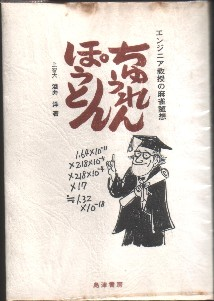
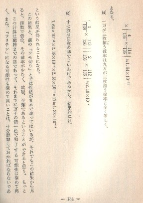
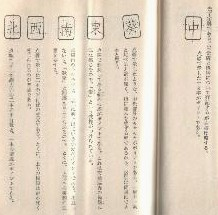
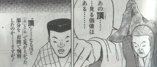
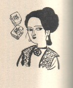
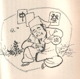

今日は、ちょっと目先の変わった本の紹介。
麻雀好きな先生が昭和47年に出版した、「ちゅうれんぽうとん」という麻雀随筆。

著者は上智大学の教授。何学の先生なのかよく分からないが、エンジニア教授とあるから、理数系の先生のよう。じっさい本文には「得点計算にみられる不合理性」とか「麻雀における確率の話」というタイトルで、数学的な分析がたくさんでてくる。

現在、インターネットには、微に入り細にわたる数学的分析のサイトが存在するが、そのハシリという感じ。といっても、どうせσ(-_-)にはチンプンカンプンだけどさ。(^-^；
随筆なので、テーマは幅広いが深く掘り下げられた内容ではない。しかし著者は麻雀が日本に伝来した大正中期の生まれ。新しモノ好きの父親が上海直輸入の牌を仕入れてきて、大正末期にすでに家庭麻雀を楽しんでいるのを見ていた。そして小学校にも上がる前から、手ほどきを受けていたという。
おまけに大学は旅順工科大学へ進学し、６年（予科３」年、本科３年）を満州で過ごした。とうぜん麻雀やりまくりとなる。その満州時代の思い出が、「簡単だった満州ルール」というテ−マで語られている。
満州ルール（終戦直後は「満ル」などと呼ばれた）は、戦後の日本ルールに大きな影響を与えた。随筆とはいえ、そんな満州麻雀の思い出が語られているので、当時の様子を知るのに貴重な資料となっている。
それはいいが、中に出てきた「発栄和」という用語に頭をひねった。（発栄和、はて？）と首をひねった。数瞬してから、「発栄和」の発は発牌(ファパイ＝打牌)の意。「栄和」はロンアガリではなく単なる「アガリ」の意。すなわち「発栄和」は打牌によるアガリで、ロンアガリを意味していることが分かった。
面白いのが、「麻雀は牌を見なくても打てる」というテーマで、摩牌（モーパイ）による判別法が詳しく述べてあるところ。たとえば は「点線内のモヤモヤと、上部に突き出ている部分がポイント。緑發と間違えることがあるので、特に上部への突起に注意を要する」とある。 は「点線内のモヤモヤと、上部に突き出ている部分がポイント。緑發と間違えることがあるので、特に上部への突起に注意を要する」とある。

あれ、この解説、どこかで見たような？ 記憶を頼りに最新号の月刊近代麻雀「盲牌の達人」をひっぱりだしてみたら、やっぱり同じような解説が。なるほど、盲羅和の達人
中島盲雲斎は、この本を読んで開眼したのか...(^-^；

挿絵は木村しゅうじという画家。
 
いまや挿絵は本文より注目されることがある。しかしこの時代は、さしみのツマ扱い。巻末に１行「さしえ 木村しゅうじ」と名前が載っているだけ。しかしこの挿し絵は素晴らしい。まさに一品。σ(-_-)も本を出すことがあったら、こんな挿絵を描いてもらいたい。
|